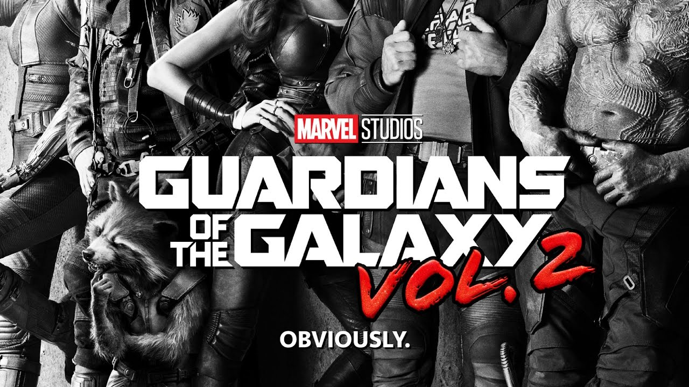
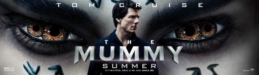

The filmmakers cited the series' first installment, The Curse of the Black Pearl (2003), as
inspiration for
the script and tone of the film, with critics describing the film as a "requel".
Pre-production for the
film
started shortly before On Stranger Tides was released in early 2011, with Terry Rossio writing the initial
script. In early 2013, Jeff Nathanson was hired to write
a new script for the film, with Depp being
involved
in Nathanson's writing process. Initially planned for a 2015 release, the film was delayed to 2016 and then
to 2017, due to script and budget issues. Principal photography started in Australia in February 2015, after
the Australian government offered Disney $20 million in tax incentives, and ended in July 2015.
Dead Men Tell No Tales premiered in Shanghai on May 11, 2017, and was released in the United States on May
26. The film received generally negative reviews from critics and grossed $795 million worldwide against a
production budget of $230–320 million.Thirteen years after the battle of Calypso's maelstrom,[a] a
twelve-year-old Henry Turner boards the Flying Dutchman and informs his father, Will, that the curse which
binds Will to the Dutchman and only permits him to step on land once a decade can be broken by the Trident
of Poseidon. Henry intends to recruit Captain Jack Sparrow to help find it, but Will believes this is
impossible and orders Henry to leave. Will and the Dutchman then disappear into the sea, but Henry vows to
find Jack and the Trident.
- Movie name : pirates of the caribbean dead men tell no tales
- Director : Joachim Rønning
- Genere : Fantasy/Action movie
- Movie Venue: QFX,Trademall
- Time :12:00-3:00
- BOOK TICKET

Guardians of the Galaxy Vol. 2 is a 2017 American superhero film based on the Marvel Comics superhero team
Guardians of the Galaxy, produced by Marvel Studios and distributed
by Walt Disney Studios Motion
Pictures.
It is the sequel to Guardians of the Galaxy (2014) and the 15th film in the Marvel Cinematic Universe (MCU).
Written and directed by James Gunn, the film stars
an ensemble cast featuring Chris Pratt, Zoe Saldaña,
Dave
Bautista, Vin Diesel, Bradley Cooper, Michael Rooker, Karen Gillan, Pom Klementieff, Sylvester Stallone, and
Kurt Russell. In the film, the Guardians travel throughout the cosmos as they help Peter Quill learn more
about his mysterious parentage.The film was officially announced at the 2014 San Diego Comic-Con
International before the theatrical release of the first film, along with James Gunn's return from the first
film, with the title of the sequel revealed a year later in June 2015. Principal photography began in
February 2016 at Pinewood Atlanta Studios in Fayette County, Georgia, with many crew changes from the first
film due to other commitments. Filming concluded in June 2016. James Gunn chose to set the sequel shortly
after the first film to explore the characters' new roles as the Guardians, and to follow the storyline of
Quill's father established throughout that previous film.
- Movie name : Galaxy Of the Gaurdians vol.2
- Director :Sudeep Tiwari
- Genere : Hollywood Action sci-fi movie
- Movie Venue: QFX,Trademall
- Time :12:00-3:00
- BOOK TICKET

The Mummy is a 1999 American action-adventure film written and directed by Stephen Sommers. It is a remake
of the 1932 film of the same name, starring Brendan Fraser, Rachel Weisz,
John Hannah and Arnold Vosloo
in
the title role as the reanimated mummy. The film follows adventurer Rick O'Connell as he travels to
Hamunaptra, the City of the Dead, with a librarian and her older brother, where they accidentally awaken
Imhotep, a cursed high priest with supernatural powers.
Development took years, with multiple screenplays and directors attached. In 1997, Sommers successfully
pitched his version of a more adventurous and romantic take on the source material.
Morocco and the United Kingdom; the crew endured dehydration, sandstorms and snakes shooting on location in
the Sahara desert. Industrial Light & Magic provided many of the visual effects, blending live-action
footage and computer-generated imagery to create the titular monster. Jerry Goldsmith provided the
orchestral score.
The Mummy was theatrically released on May 7, 1999. Despite mixed critical reviews, it was a commercial
success and grossed over $416.4 million worldwide against a production budget of $80 million.
- Movie name : The Mummy
- Director : James Gunn
- Genere : 3D Horror Movie
- Movie Venue: QFX,Trademall
- Time :12:00-3:00
- BOOK TICKET

Wonder Woman is a superhero created by the American psychologist and writer William Moulton Marston (pen
name: Charles Moulton), and artist Harry G. Peter for DC Comics.
Marston's wife, Elizabeth, and their
life partner, Olive Byrne, are credited as being his inspiration for the character's appearance.
Wonder Woman appears in American comic books published by DC Comics.
The character is a founding member
of
the Justice League. The character first appeared in All Star Comics #8 published October 21, 1941 with
her first feature in Sensation Comics #1 in January 1942. The Wonder Woman title has been published by DC
Comics almost continuously ever since.
In her homeland, the island nation of Themyscira, her official title is Princess Diana of Themyscira. When
blending into the society outside of her homeland, she sometimes adopts her civilian identity Diana
Prince.
Wonder Woman's origin story (from Golden to Bronze Age) relates that she was sculpted from clay by her
mother Queen Hippolyta and was given a life as an Amazon, along with superhuman powers as gifts by the Greek
gods. In 2011, DC changed her background with the retcon that she is the biological daughter of Zeus and
Hippolyta, jointly raised by her mother and her aunts Antiope and Menalippe.
- Movie name : Wonder Women
- Director : Patty Jenkins
- Genere : Marvel's Action Movie
- Movie Venue: QFX,Trademall
- Time :12:00-3:00
- BOOK TICKET